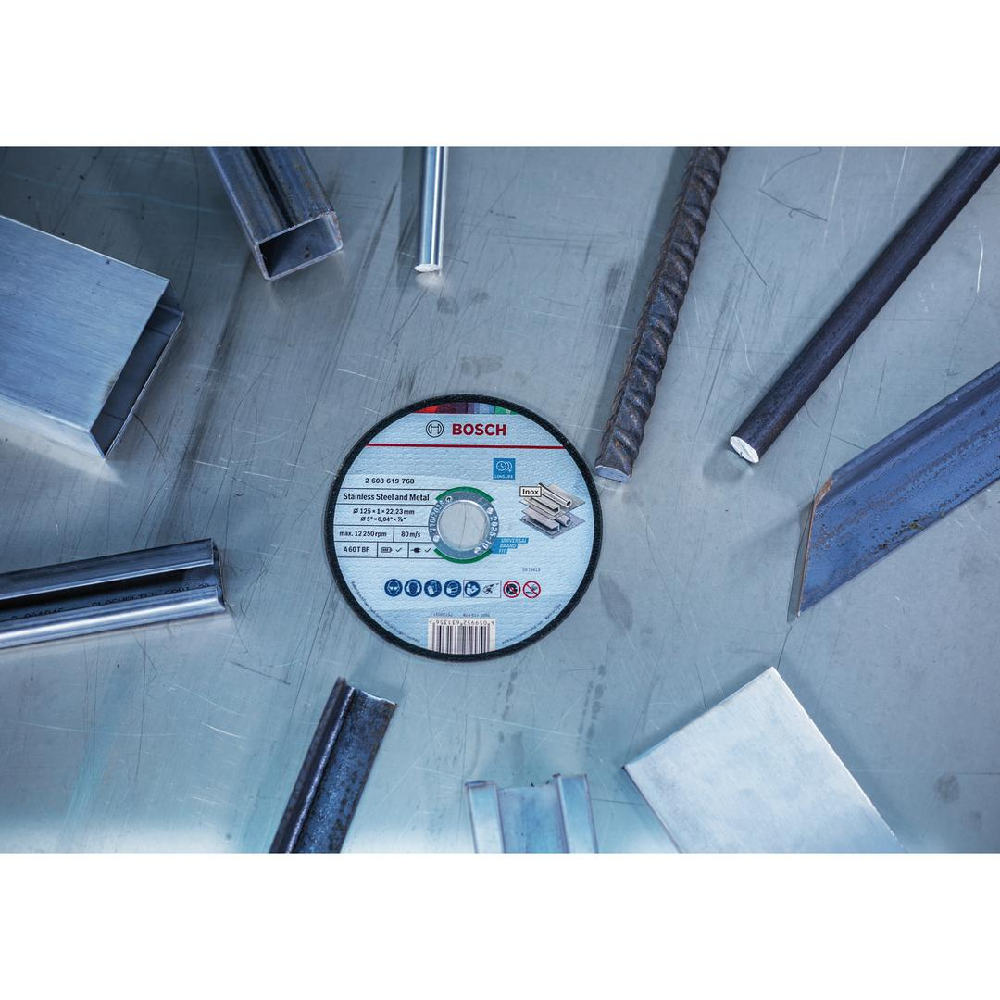
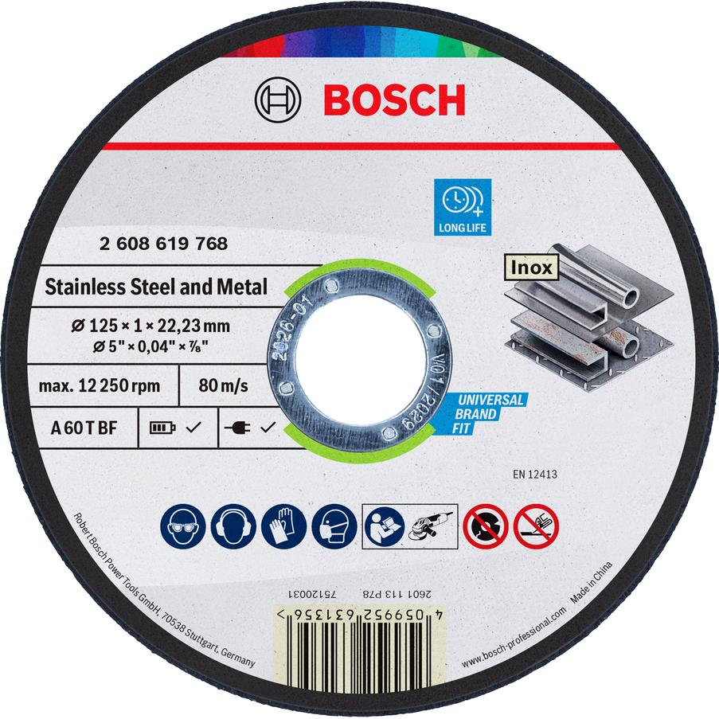

2608619768


| Diameter, mm |
125 |
| Bore diameter, mm |
22.23 |
| Thickness, mm |
1.0 |
| Specification |
A 60 T BF |
| Packaging type |
Non-packaged product, no Euro hole |
| Pack quantity |
1 Pcs |
| Minimum order quantity |
50 Pcs |